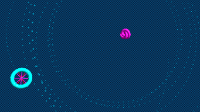

A deterministic mechanical universe replacing zero-dimensional point particles and abstract spacetime with a hyper-elastic vacuum fluid and topological knots of confined light.
The Fluid Vacuum: Empty space is an active, pressurized field of zero-point fluctuations. Planck's constant (h) is explicitly defined as the fundamental kinematic action viscosity of this medium.
The Geon Threshold: At exactly 1.022 MeV, inward volumetric Casimir pressure overpowers internal repulsive expansion. Asymmetrical topological shear arrests forward momentum, violently buckling the wave into stable, counter-rotating loops of matter.
Leptonic & Hadronic Geometry: Electrons are 1D tracks of circularly polarized light trapped in continuous 4π twisted Möbius double-loops. Protons are self-intersecting (3,2)-trefoil knots.
Gauss Shell Emergence: Fractional point-quarks are eliminated. Charge is a macroscopic illusion generated by the destructive interference of transverse electric vectors. The surviving inward radial flux mathematically projects a perfect inverse-square monopole.
Strong Nuclear Force & Inertia: The strong force is macroscopic vacuum surface tension (178,700 Newtons of physical inward Casimir pressure). Inertia is the geometric resistance of the vacuum against the physical stretching of the light track into a helix under acceleration.
Gravity: Mass acts as a geometric shield against isotropic vacuum pressure. Mutual Casimir shadows create unbalanced external pressure, mechanically pushing overlapping geometries together. Gravitational lensing is fluid-dynamic wave-front refraction.
The Double-Slit & Singularities: The localized topological core passes through one slit, while its extended macroscopic vector potential acts as a deterministic "pilot wave". Gravitational collapse hits an absolute physical boundary (the Gezin Radius), and intersecting mass unspools instantly back into pure gamma radiation (Quasar Ignition).

Probabilistic but Deterministic: The famous 2013 photoionization microscopy image of the Hydrogen atom's wave function shows nested rings of probability. In this framework, those are not random clouds of a point particle popping in and out of existence. It is the time-averaged optical blur of the deterministic topological electron being steered by the continuous resonances of its own macroscopic pilot wave interacting with the proton's topology.